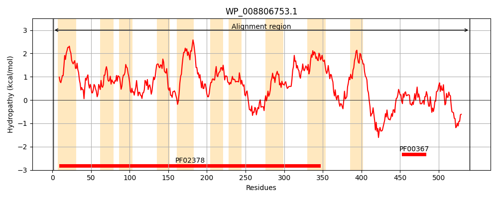
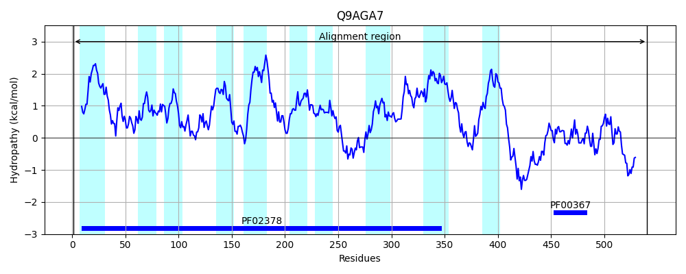
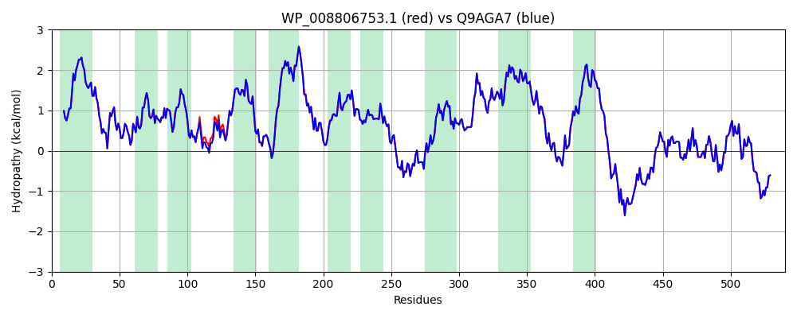

Hit Accession: Q9AGA7
Hit TCID: 4.A.1.1.10
Hit Description: gnl|BL_ORD_ID|17730 gnl|TC-DB|Q9AGA7|4.A.1.1.10 PTS system alpha-glucoside-specific EIICB component [Includes: Alpha- glucoside permease IIC component (PTS system alpha-glucoside-specific EIIC component); Alpha-glucoside-specific phosphotransferase enzyme IIB component (EC 2.7.1.69)
Mach Len: 540
e:0.000000
Query TMS Count : 10
Hit TMS Count: 10
TMS-Overlap Score: 10.300000
Predicted Substrates:CHEBI:68428;maltitol, CHEBI:6026;isomaltose, CHEBI:79284;trehalulose, CHEBI:7893;6-O-alpha-D-glucopyranosyl-D-fructofuranose, CHEBI:18394;6-O-alpha-D-glucopyranosyl-D-fructofuranose, CHEBI:32528;turanose, CHEBI:5418;glucose
BLAST Alignment:
Score: 2767 , Bit scores: 1070 bits, E-value: 0.0e+00, Alignment length: 540, Percentage identity: 100
Query: 1 MLSQIQRFGGAMFTPVLLFPFAGIVVGIAIMLRNPMFVGEALTAPDSLFAQIVHIIEEGGWTVFRNMPLIFAVGLPIGLAKQAQGRACLAVLVSFLTWNYFINAMGMTWGHFFGVDFSVEPTAGSGLTMIAGIKTLDTSIIGAIVISGLVTALHNRYFDKPLPVFLGIFQGSSFVVIVAFLAMIPCAWLTLLGWPKVQLGIESLQAFLRSAGALGVWVYIFLERILIPTGLHHFVYGPFIFGPAVVEGGLQVYWAEHLQAFSQSTEPLKTLFPEGGFALHGNSKVFGSVGIALALYFTAAPENRVKVAGLLIPATLTAMLVGITEPLEFTFLFISPLLFAVHAVLAATMATVMYICGVVGNFGGGLLDQFLPQNWIPMFHHHASMMFIQIGIGLCFTALYFVVFRTLILRLNLKTPGREESEIKLYSKADYQAARGKTTAAAAPETRLGQAAGFLQALGGADNIESINNCATRLRIALVDMAKTQSDDVFKALGAHGVVRRGNGIQVIVGLHVPQVRDQLENLMKDSLSTEHTTMTEAVS 540
MLSQIQRFGGAMFTPVLLFPFAGIVVGIAIMLRNPMFVGEALTAPDSLFAQIVHIIEEGGWTVFRNMPLIFAVGLPIGLAKQAQGRACLAVLVSFLTWNYFINAMGMTWGHFFGVDFS EPTAGSGLTMIAGIKTLDTSIIGAIVISGLVTALHNRYFDKPLPVFLGIFQGSSFVVIVAFLAMIPCAWLTLLGWPKVQLGIESLQAFLRSAGALGVWVYIFLERILIPTGLHHFVYGPFIFGPAVVEGGLQVYWAEHLQAFSQSTEPLKTLFPEGGFALHGNSKVFGSVGIALALYFTAAPENRVKVAGLLIPATLTAMLVGITEPLEFTFLFISPLLFAVHAVLAATMATVMYICGVVGNFGGGLLDQFLPQNWIPMFHHHASMMFIQIGIGLCFTALYFVVFRTLILRLNLKTPGREESEIKLYSKADYQAARGKTTAAAAPETRLGQAAGFLQALGGADNIESINNCATRLRIALVDMAKTQSDDVFKALGAHGVVRRGNGIQVIVGLHVPQVRDQLENLMKDSLSTEHTTMTEAVS
Sbjct: 1 MLSQIQRFGGAMFTPVLLFPFAGIVVGIAIMLRNPMFVGEALTAPDSLFAQIVHIIEEGGWTVFRNMPLIFAVGLPIGLAKQAQGRACLAVLVSFLTWNYFINAMGMTWGHFFGVDFSAEPTAGSGLTMIAGIKTLDTSIIGAIVISGLVTALHNRYFDKPLPVFLGIFQGSSFVVIVAFLAMIPCAWLTLLGWPKVQLGIESLQAFLRSAGALGVWVYIFLERILIPTGLHHFVYGPFIFGPAVVEGGLQVYWAEHLQAFSQSTEPLKTLFPEGGFALHGNSKVFGSVGIALALYFTAAPENRVKVAGLLIPATLTAMLVGITEPLEFTFLFISPLLFAVHAVLAATMATVMYICGVVGNFGGGLLDQFLPQNWIPMFHHHASMMFIQIGIGLCFTALYFVVFRTLILRLNLKTPGREESEIKLYSKADYQAARGKTTAAAAPETRLGQAAGFLQALGGADNIESINNCATRLRIALVDMAKTQSDDVFKALGAHGVVRRGNGIQVIVGLHVPQVRDQLENLMKDSLSTEHTTMTEAVS 540 | Protein Hydropathy Plots: |
|---|
|  |  |
Pairwise Alignment-Hydropathy Plot:
|
|---|
|  |